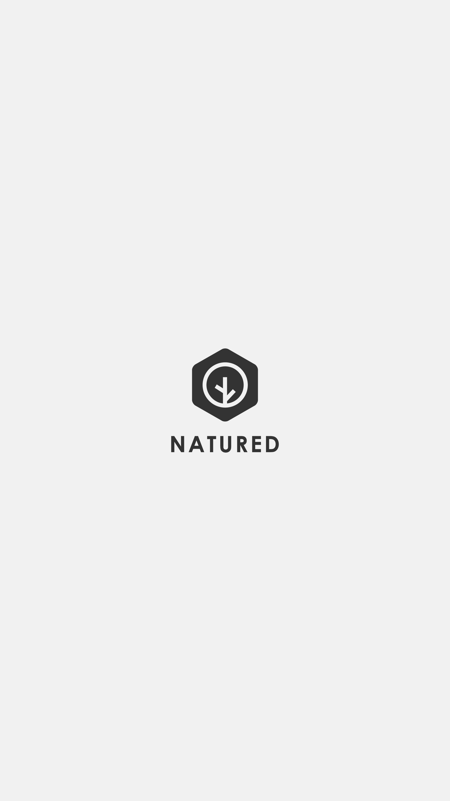
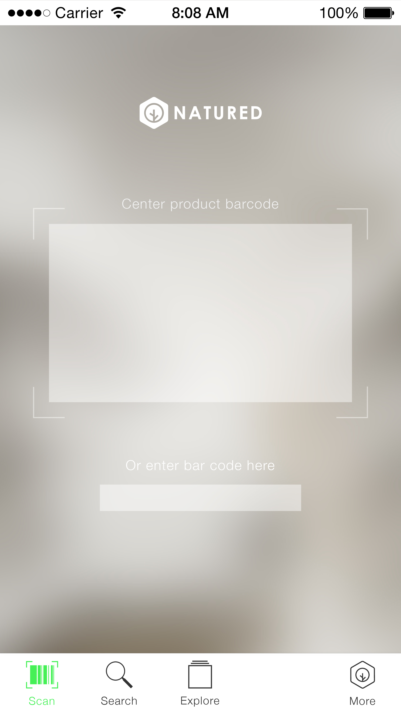
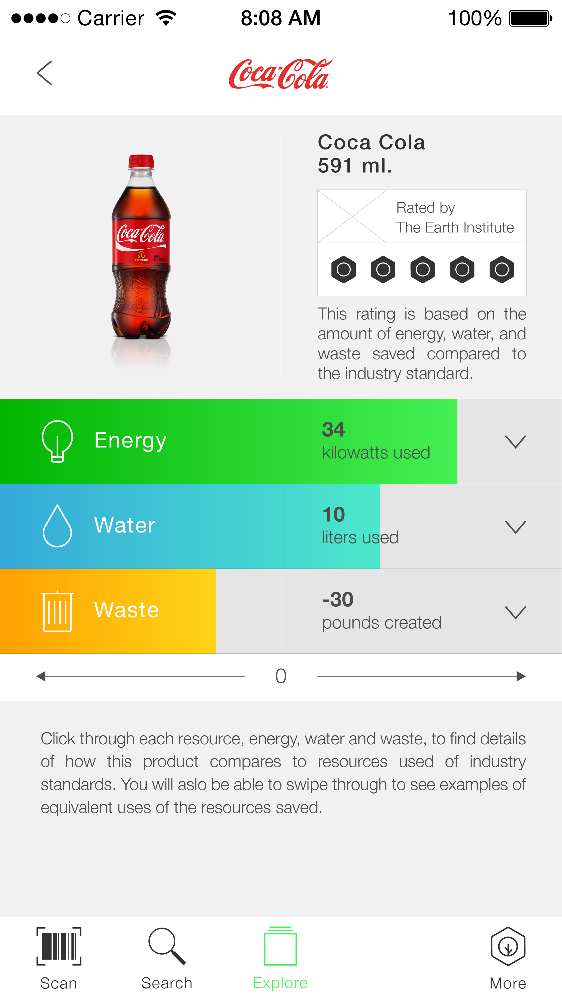
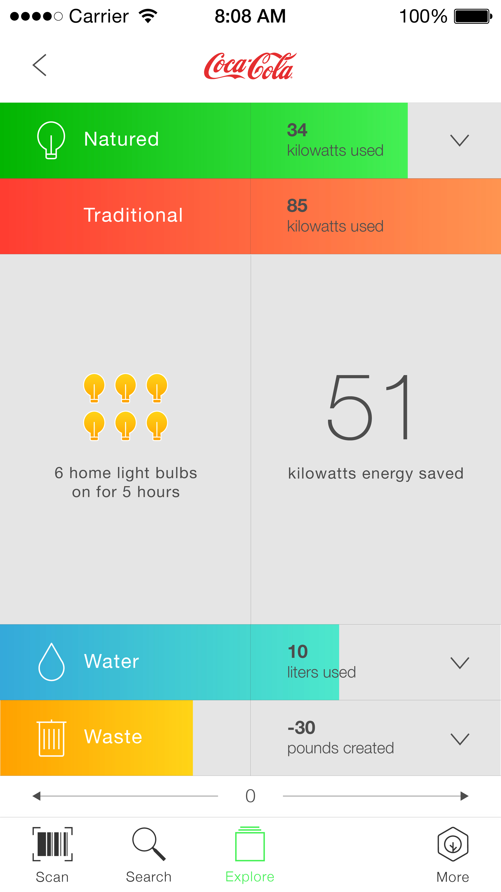
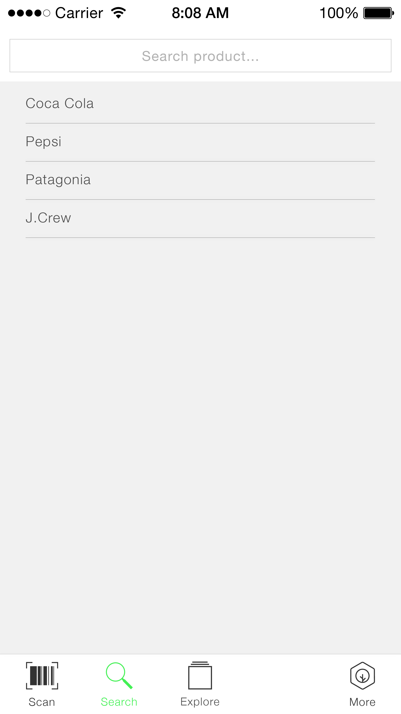
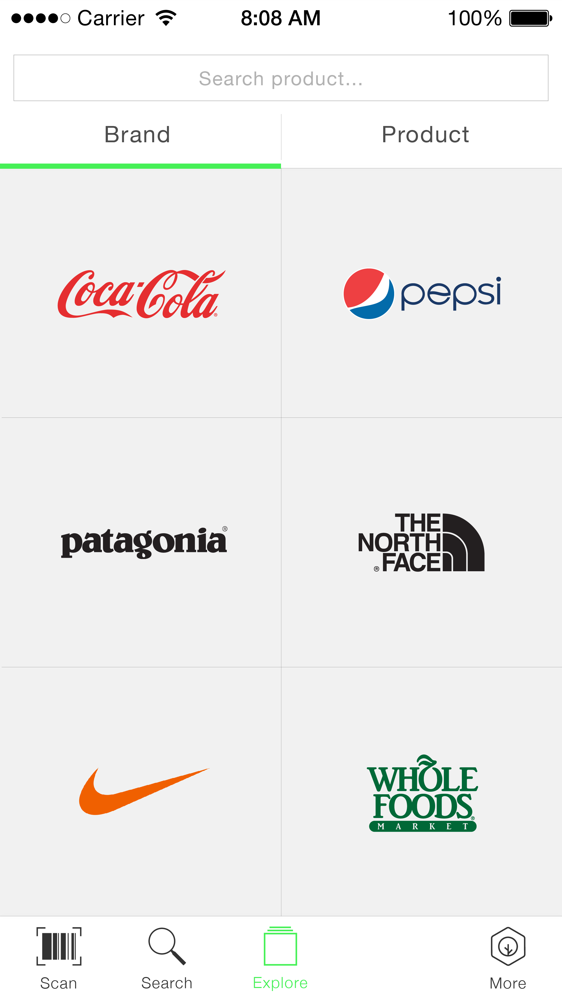
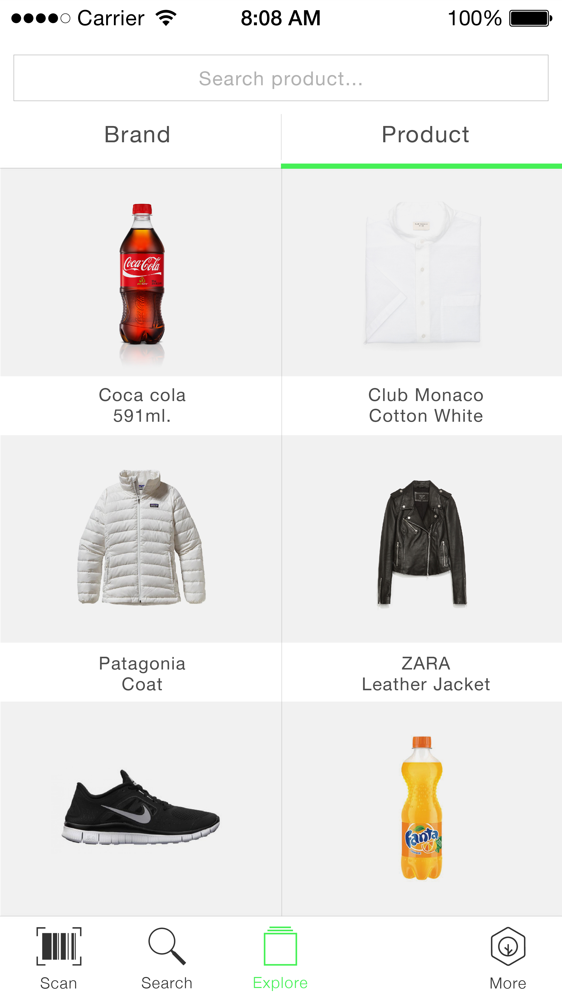
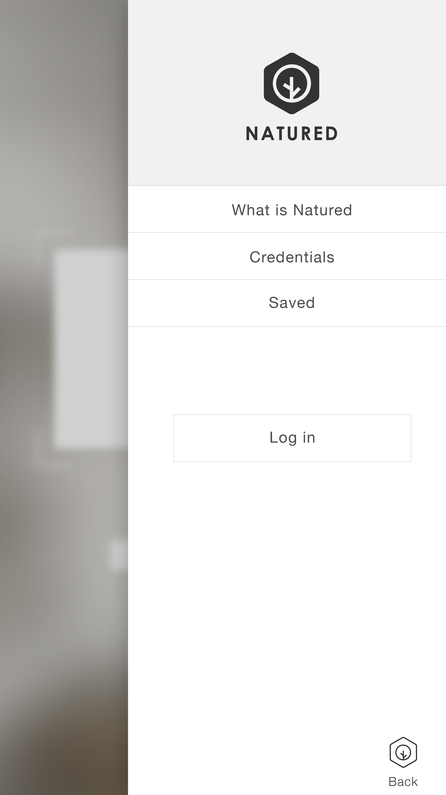

<!DOCTYPE html>
<html lang="en">
<head>
  <!-- Required meta tags -->
  <meta charset="utf-8">
  <title>Natured | Alex Wu</title>
  <meta name="viewport" content="width=device-width, initial-scale=1, shrink-to-fit=no">
  <meta name="description" content="Design Portfolio">
  <meta name="author" content="Alex Wu">

  <link href="../css/flex-layout-attribute.min.css" rel="stylesheet">
  <link href="../css/global.css" rel="stylesheet">
  <link href="../css/topbar.css" rel="stylesheet">
  <link href="../css/responsive.css" rel="stylesheet">
  <link href="../css/animation.css" rel="stylesheet">
  <link href="https://fonts.googleapis.com/css?family=Roboto+Slab:300" rel="stylesheet">
  <link href="../css/project.css" rel="stylesheet">

  <script src="https://www.w3schools.com/lib/w3.js"></script>
  <script type="text/javascript" src="../js/jquery-3.2.1.min.js"></script>

  <meta name="viewport" content="width=device-width, initial-scale=1.0, maximum-scale=1.0, user-scalable=no">

  <script>
  (function(i,s,o,g,r,a,m){i['GoogleAnalyticsObject']=r;i[r]=i[r]||function(){
  (i[r].q=i[r].q||[]).push(arguments)},i[r].l=1*new Date();a=s.createElement(o),
  m=s.getElementsByTagName(o)[0];a.async=1;a.src=g;m.parentNode.insertBefore(a,m)
  })(window,document,'script','https://www.google-analytics.com/analytics.js','ga');

  ga('create', 'UA-106005588-1', 'auto');
  ga('send', 'pageview');

</script>

</head>
<body>
  <div w3-include-html="topbar.html"></div>
  <div id="overlay"></div>
  <!--   topbar section start here   -->
  <section id="nav" class="nav" layout="row center-justify">
        <div>
          <a href="/"></a>
        </div>
        <div id="hamburger" class="hamburger" self="right">
          <span class="hamburger__top-bun"></span>
          <span class="hamburger__bottom-bun"></span>
        </div>
  </section>
  <!--   topbar section end here   -->


<!-- header seciton start here-->
  <section class="page-wrapper header">
    <div class="container--text">

      <div class="tag">
        SVA / Sustainability
      </div>

       <div class="page-title">
           <h1>Natured</h1>
       </div>
       <div>
           <h2 class="page-sub-title">Make people care about where products come from</h2>
       </div>

       <div>
         <p class="high-light">
           Create a truthful and reliabletool and system that makes people care about where products come from, and communicates that information clearly.
         </p>
       </div>
<!--
       <p class="seciton-divider">...</p> -->

    </div>
  </section>
<!-- header seciton end here -->

<section class="page-wrapper content">
  <div class="container--text">
      <h3>Context</h3>
      <p>Natured is a project for Communication Design class in my first year of MFA Design for Social Innovation. We cooperate with a chemical technology company who create a sustainable plastic for apparel and packaging industries. They want us to help them to create a tool or system that gets people to care about where products come from that shift consumers' purchasing behaviors. Our team developed a communication strategy and system that include advertising campaigns, websites, social events, and mobile app.</p>
  </div>
</section>

<section class="page-wrapper content">
  <div class="container--text">
    <h3>Challenges</h3>
    <p>There is a lack in supply chain transparency which has caused us to feel disconnected to the products we surround ourselves with. The mass consumer culture allows customers and businesses to be unaware of the impact products’ life cycles have on the environment and other living beings. This culture however is evolving. Consumers and businesses are noticing a shift in the demands of this culture which increasingly values information about product’s lifecycle. The assignment is to bring transparency to the materials used, and create an interest among consumers in provenance.</p>

    <p>We hope to do this by creating a place where consumers can easily access information about a product they are debating on purchasing to ensure that its production and impact lines up with their values.</p>

</section>

<section class="page-wrapper content">
  <div class="container--text">
    <h3>Process</h3>
    <p>We did research with industry experts from the innovation team at Pepsi Co. to board members of Greenpeace. We wanted to start by learning what has worked well in their experience about communicating about sustainability and where products come from. We also completed competitive audits of how other brands communicate about sustainability and provenance, such as Chiquita Banana, Lush, Good Guide, and Icebreaker.</p>

    <p><strong style="font-size: 21px; color:#2d2d2d;">What has to be true in order to get there?<br /></strong>  </p>

    <p>
      <strong>Truthful and reliable tool and system:</strong>
      A tool is much stronger if it is part of a system<br />

      <strong>Makes people care:</strong>
      We need to be visible. Emotional connection not just facts<br />

      <strong>Where products come from:  </strong>
      We need to identify the reasons why origin matters to people<br />

      <strong>Communicates that information clearly:</strong>
       We need a visual language. Communicate step by step, no jargon
    </p>


    <p><strong style="font-size: 21px; color:#2d2d2d;">What are we going to do to make those things true?<br /></strong>  </p>

    <p>
    Name<br />
    Certification, rating system<br />
    Information architecture<br />
    Campaign
    </p>

    <div class="container--image" style="height:300px; margin-bottom:32px">
      <div class="image"style="background-image: url(../img/natured/logo.png)"></div>
    </div>
    <div class="container--image" style="margin-bottom:32px">
      <div class="image" style="background-image: url(../img/natured/label.jpg)"></div>
    </div>
    <div class="container--image" style="height:540px; margin-bottom:32px">
      <div class="image"style="background-image: url(../img/natured/system-1.png)"></div>
    </div>
    <div class="container--image" style="height:360px;">
      <div class="image"style="background-image: url(../img/natured/system-2.png) "></div>
    </div>
  </div>
</section>

<section class="page-wrapper content">
  <div class="container--text">

    <h3>Design</h3>
    <p>In part of this system, I mainly designed visuals and app as a tool for customers to see the transparent information of the packaging itself. In order to make complicated information digestible for consumers. I focus on the user experience toward a simpler way to visualized information. After making their way to our website or app, users to dive into the impact that products have on the environment.
    </p>
    <p>Through the app, users can scan the barcodes of products or use the search or browse function. Once on a product page, they can see the product, rating, and more detail about what went into that rating, the energy, water, and waste used to make that product, from raw material to final manufacturing.</p>

    <div class="container--full-width">
        <div class="container--photo-grid">
          <ul layout="rows top-center">
            <li>
              <div class="photo-grid-card">
                
              </div>
            </li>
            <li>
              <div class="photo-grid-card">
                
              </div>
            </li>
            <li>
              <div class="photo-grid-card">
                
              </div>
            </li>
            <li>
              <div class="photo-grid-card">
                
              </div>
            </li>
            <li>
              <div class="photo-grid-card">
                
              </div>
            </li>
            <li>
              <div class="photo-grid-card">
                
              </div>
            </li>
            <li>
              <div class="photo-grid-card">
                
              </div>
            </li>

            <li>
              <div class="photo-grid-card">
                
              </div>
            </li>
          </ul>
        </div>
    </div>


<section class="page-wrapper content">
  <div class="container--text">

    <h3>Credit</h3>
    <p>Amer Jandali, Hannah Phang, Rod Muñoz-Valencia, Barbara Fang, Alex Wu</p>

  </div>
</section>


  <!--   footer section start here   -->
  <footer class="container container--footer">
    <div class="center">
        <div layout="rows center-spread">
          <div class="location">
            <a class="underline-2" href="https://www.google.com/maps/@37.804208,-122.2661778,13.64z" target="_blank" >Oakland, CA</a>
          </div>
          <div class = "email">
            <a class="underline-2" href="mailto:alexmtwu@gmail.com?Subject=Hello!" target="_top">alexmtwu@gmail.com</a>
          </div>
          <div class="social-icon" style="width:80px, height:80px">
            <a href="https://www.instagram.com/alexmtwu/" target="_blank"></a>

            <a href="https://www.linkedin.com/in/alexmtwu/" target="_blank"></a>
          </div>
        </div>
        <div class="all-rights-reserved" layout="row center-center">
          © 2017 Alex Wu
        </div>
    </div>
  </footer>
  <!--   footer section end here   -->


  <script>w3.includeHTML();</script>
  <script type="text/javascript" src="../js/homepage.js"></script>

  <script type="text/javascript">

  // menu show/hidden
  var $document = $(document),
    $element = $('.nav'),
    className = 'nav-bg';

  $document.scroll(function() {
    if ($document.scrollTop() >= 180) {
      $element.addClass(className);
    } else {
      $element.removeClass(className);
    }
  });
  </script>


</body>
